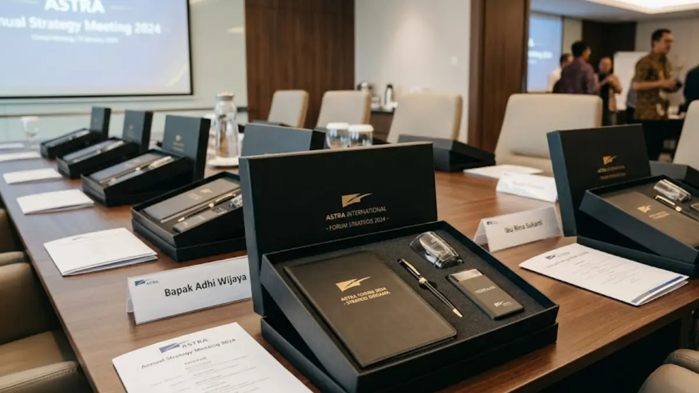
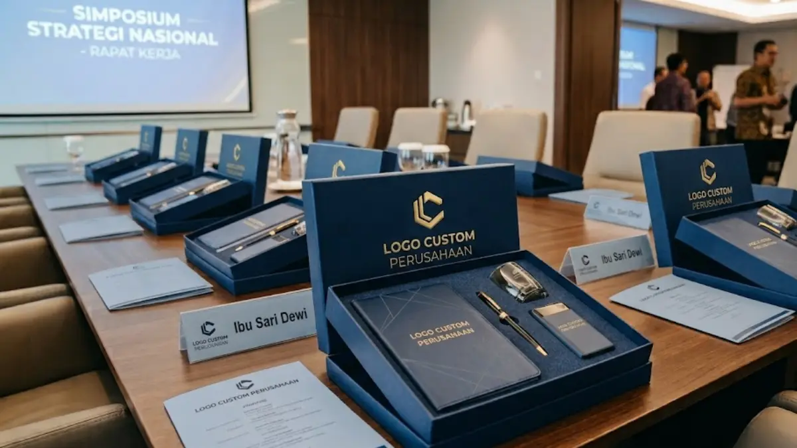

Souvenir Kantor Eksklusif untuk Meeting, Gathering, hingga Corporate Anniversary
 Mega Anggun (ega)
3 Agustus 2026
5 Menit Baca
Mega Anggun (ega)
3 Agustus 2026
5 Menit Baca

Souvenir kantor eksklusif dapat disesuaikan jenis dan desainnya untuk berbagai momen perusahaan, mulai dari meeting formal, gathering karyawan, hingga perayaan corporate anniversary, sesuai suasana dan tujuan masing-masing acara. Setiap jenis acara korporat memiliki karakteristik kebutuhan souvenir yang berbeda. Penyesuaian jenis souvenir dengan konteks acara meningkatkan relevansi dan kesan yang diterima.
Souvenir kantor eksklusif dapat disesuaikan jenis dan desainnya untuk berbagai momen perusahaan, mulai dari meeting formal, gathering karyawan, hingga perayaan corporate anniversary, sesuai suasana dan tujuan masing-masing acara. Setiap jenis acara korporat memiliki karakteristik kebutuhan souvenir yang berbeda. Meeting formal umumnya membutuhkan souvenir dengan kesan elegan dan profesional. Gathering karyawan lebih cocok dengan souvenir fungsional dan bernuansa santai. Corporate anniversary memerlukan souvenir dengan sentuhan personalisasi lebih mendalam. Penyesuaian jenis souvenir dengan konteks acara meningkatkan relevansi dan kesan yang diterima.
Souvenir Kantor Eksklusif Seperti Apa yang Sesuai untuk Meeting Formal?
Souvenir kantor eksklusif untuk meeting formal umumnya berupa produk dengan desain minimalis dan elegan, seperti tumbler finishing matte atau card holder logam, yang mencerminkan kesan profesional tanpa tampilan berlebihan.
Pada konteks meeting formal, terutama pertemuan dengan mitra bisnis atau calon klien, pemilihan souvenir sebaiknya menghindari desain yang terlalu ramai atau warna yang mencolok. Warna netral seperti hitam, abu-abu, atau silver pada tumbler maupun card holder cenderung lebih sesuai dengan suasana formal dibandingkan warna-warna cerah yang lebih cocok untuk acara santai. Logo perusahaan pada souvenir untuk meeting formal sebaiknya ditempatkan secara proporsional, tidak terlalu besar, agar kesan yang dihasilkan tetap elegan dan tidak berlebihan.
Selain aspek desain, ukuran dan kepraktisan produk juga menjadi pertimbangan penting untuk konteks meeting. Produk yang ringkas dan mudah dibawa, seperti card holder atau notes kecil, umumnya lebih sesuai dibandingkan produk berukuran besar yang kurang praktis dibawa dalam suasana pertemuan bisnis formal.

Souvenir Apa yang Paling Relevan untuk Acara Gathering Karyawan?
Souvenir untuk gathering karyawan umumnya lebih fungsional dan bernuansa santai, seperti tumbler dengan warna variatif atau agenda dengan desain yang lebih ekspresif dibandingkan souvenir untuk acara formal.
Gathering karyawan biasanya diselenggarakan dengan suasana yang lebih rileks dibandingkan meeting bisnis, sehingga pemilihan souvenir juga dapat mengikuti nuansa tersebut. Tumbler dengan pilihan warna yang lebih beragam, misalnya kombinasi warna cerah dengan logo perusahaan yang tetap terlihat jelas, sering menjadi pilihan populer untuk acara gathering.
Selain tumbler, produk fungsional lain seperti tote bag custom atau tumbler dengan tambahan aksesori seperti tali gantungan turut menjadi alternatif yang relevan untuk suasana gathering yang lebih santai.
Penting untuk diperhatikan bahwa meskipun suasana gathering cenderung informal, kualitas produk souvenir tetap perlu dijaga agar tidak menurunkan persepsi karyawan terhadap perhatian perusahaan pada acara tersebut. Souvenir yang berkualitas baik meski dengan desain santai tetap dapat memberikan kesan positif bagi karyawan yang menerimanya.
Bagaimana Memilih Souvenir yang Tepat untuk Momen Corporate Anniversary?
Souvenir untuk momen corporate anniversary sebaiknya memiliki tingkat personalisasi yang lebih mendalam, seperti pencantuman tahun berdirinya perusahaan atau tagline khusus perayaan, dibandingkan souvenir untuk acara rutin lainnya.
Corporate anniversary merupakan momen istimewa yang menandai perjalanan panjang sebuah perusahaan, sehingga souvenir yang diberikan pada momen ini idealnya mencerminkan nilai historis dan pencapaian perusahaan. Penambahan elemen seperti angka tahun perayaan, misalnya "10 Tahun Berkarya", atau tagline khusus yang dirancang untuk perayaan tersebut dapat memberikan nilai emosional lebih pada souvenir dibandingkan sekadar logo standar perusahaan.
Dari sisi jenis produk, souvenir untuk corporate anniversary sering kali menggunakan kombinasi produk dalam bentuk paket, misalnya tumbler premium dipadukan dengan agenda khusus edisi perayaan. Guna memberikan kesan bahwa souvenir tersebut dirancang khusus dan tidak sama dengan souvenir pada acara-acara rutin lainnya. Perusahaan juga dapat mempertimbangkan penggunaan kemasan khusus edisi perayaan untuk semakin memperkuat kesan eksklusif dari momen tersebut.
Bagaimana Menentukan Waktu Pemesanan yang Ideal untuk Setiap Jenis Acara?
Waktu pemesanan souvenir kantor eksklusif sebaiknya disesuaikan dengan skala acara, di mana acara berskala besar seperti corporate anniversary umumnya memerlukan waktu persiapan yang lebih panjang dibandingkan meeting rutin.
Meeting Formal
Untuk acara meeting formal yang bersifat rutin, waktu pemesanan souvenir dapat dilakukan dalam rentang waktu yang relatif lebih singkat karena jumlah dan kompleksitas desain umumnya tidak terlalu tinggi.
Gathering Karyawan
Sebaliknya, acara gathering karyawan dengan jumlah peserta yang lebih besar memerlukan waktu tambahan untuk memastikan seluruh unit souvenir dapat diproduksi dengan kualitas yang konsisten sebelum hari pelaksanaan.
Corporate Anniversary
Corporate anniversary sebagai acara dengan skala terbesar dan tingkat personalisasi tertinggi umumnya memerlukan waktu persiapan paling panjang di antara ketiga jenis acara tersebut, mengingat proses desain khusus, tahap mock-up, hingga produksi dalam jumlah besar memerlukan koordinasi yang lebih matang antara perusahaan dan penyedia souvenir.
Butuh Souvenir Kantor Eksklusif untuk Acara Perusahaan Anda?
Konsultasikan kebutuhan souvenir kantor eksklusif untuk meeting, gathering, atau anniversary perusahaan Anda dengan tim kami untuk mendapatkan rekomendasi produk terbaik.
Konsultasi SekarangKesimpulan
Pemilihan souvenir kantor eksklusif yang disesuaikan dengan jenis acara, baik meeting formal, gathering karyawan, maupun corporate anniversary, dapat meningkatkan relevansi dan kesan yang diterima oleh penerima souvenir. Perusahaan disarankan mempertimbangkan suasana acara, tingkat personalisasi, serta waktu persiapan sejak tahap perencanaan awal. Untuk kebutuhan produk dengan sentuhan lebih premium, perusahaan dapat mempelajari signature collection souvenir kantor eksklusif, atau opsi paket lengkap pada bundling souvenir kantor eksklusif.
FAQ Seputar Souvenir Kantor Eksklusif untuk Acara Perusahaan